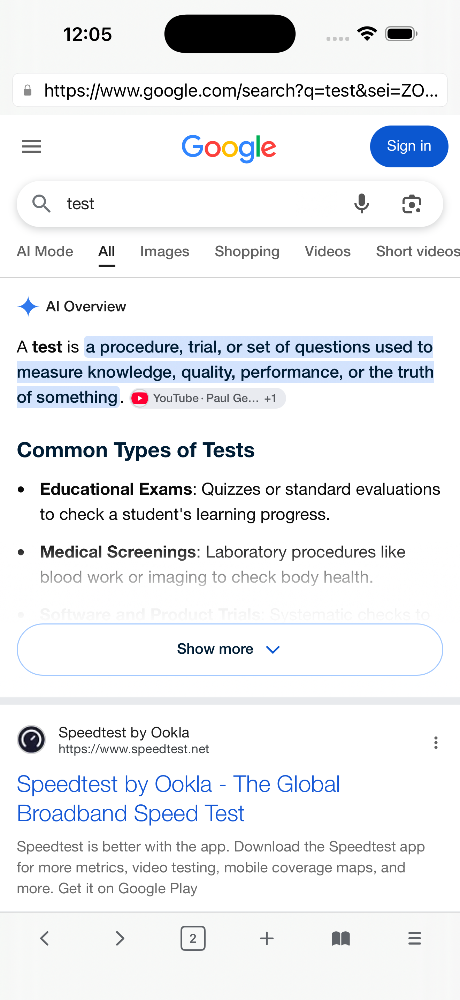

FREE · FOR MAC
One Browser. Every Apple Device.
Live captions on your Mac — the same clean, private browser on iPhone and iPad
Macも、iPhoneも、iPadも。同じブラウザを。

MACOS 26 · LIVE CAPTIONS
IPADOS 26 · PRIVATE BROWSING

IOS 26 · FAST SEARCH